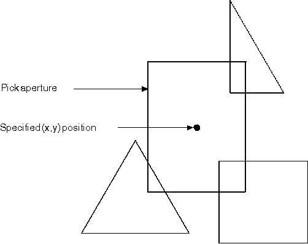

When you want to select an area of interest on the screen, you usually move the pointer to the applicable point and signal (by clicking a mouse, for example) that this is the object you want. This selection process most commonly is used for graphic applications. For example, your application could permit a user to select an object, then change its color. Correlation, however, can also be used in nongraphic applications. For example, your application could model the operation of a calculator and permit a user to select numbers for mathematical operations.
The area of interest is defined by the operating system as a small rectangle, centered on the (x,y) coordinate position, that has been sent to the application. The virtual rectangle the application generates is known as the pick aperture. The following figure shows an example of a pick aperture.
The Pick Aperture
The process of determining what lies in the pick aperture differs between nonretained and retained graphics. For nonretained graphics, the presentation space must be put in a state that supports correlation before the primitives are drawn. Then correlation is performed while the primitives are being drawn. For retained graphics, the segments that contain the graphics can be replayed, permitting correlation after the primitives are drawn.
Note: The necessity to correlate graphics can usually be predicted. Therefore you can plan for it when designing applications. However, this does not mean that you have to create retained (rather than nonretained) graphic segments. The decision to retain graphics is dependent on several considerations of which correlation is only one.